Authors: Pedro Alcázar Guerrero
Type: theory · Category: disordered systems and neural networks · PDF: https://arxiv.org/pdf/2607.25411v1
Analysis basis: full PDF text, analyzed in chunks
Topic relevance: Keldysh / 2PI / non-Gaussian methods 2/5 · methods for driven-dissipative 2/5 · non-equilibrium dynamics 2/5 · spintronics-quantum-optics interface 2/5 · Kondo & dissipative impurity 1/5 · analog quantum simulation 1/5 · correlated / nonlocal dissipation 1/5 · driven-dissipative phase transition 1/5 · entanglement & information structure 1/5 · exotic spin models in light-matter 1/5 · non-equilibrium universality 1/5 · scars & prethermalization 1/5
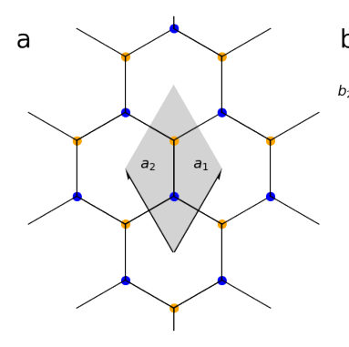
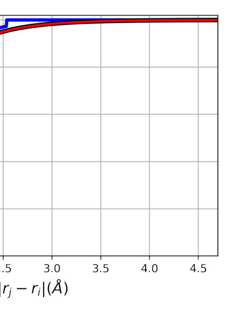
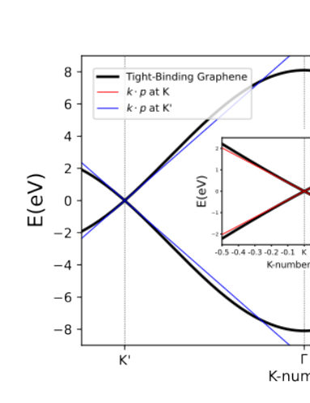
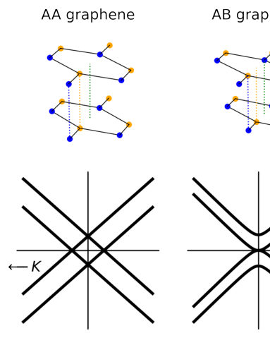
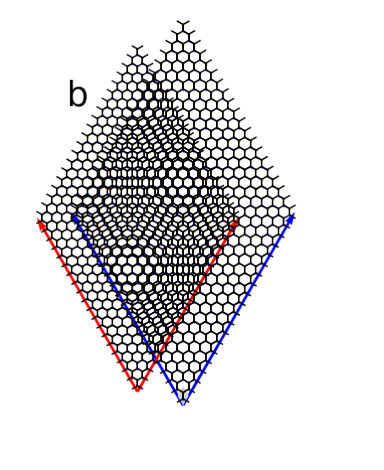
Summary. This thesis comprehensively analyzes electronic and spin transport in complex graphene structures exhibiting super- or quasiperiodicity. It demonstrates that disorder can paradoxically enhance conductivity in magic-angle twisted bilayer graphene while identifying unique signatures of quasicrystalline order. Overall, it unifies the understanding of how geometry and structural imperfections govern quantum transport phenomena.
Why it may be interesting. It provides a detailed framework for understanding how geometric frustration and randomness interact with quantum coherence, which is central to open quantum system dynamics and localization studies.
Main problem. The study investigates how structural complexities like superperiodicity, quasiperiodicity, and disorder fundamentally shape electronic and spin transport in graphene-based materials.
Main result. The work establishes that moderate disorder can counterintuitively enhance the mean free path in magic-angle twisted bilayer graphene, while quasicrystalline order exhibits distinct sub-ballistic localization signatures fragile to structural perturbations.
Method. The research employs large-scale real-space quantum-transport methods, utilizing Kubo-type formulations and tight-binding descriptions incorporating curvature effects.
Model / system. The primary systems studied are graphene, specifically in its twisted multilayer form (including magic-angle interfaces), quasicrystal approximants, and suspended monolayer sheets for spin transport analysis.
Key observables. Mean free path, quantum metric derived from optical conductivity, sub-ballistic exponent, and spin lifetimes.
Important parameters / regimes. Disorder strength (Anderson disorder), structural periodicity (super/quasiperiodicity), and interlayer proximity effects.
Assumptions / limitations. The analysis relies on established transport formalisms and assumes that flat-band features remain robust enough to exhibit specific disorder-induced delocalization behavior.
Figures summary. Not specified, but the work builds upon establishing controlled transport fingerprints distinguishing various periodic modulations.
Paper structure. The thesis progresses from fundamental concepts (superperiodicity/quasiperiodicity) to computational methods, analyzing controlled models, then focusing sequentially on disorder effects in twisted multilayer graphene and spin transport in corrugated monolayer systems.
This thesis investigates how superperiodicity, quasiperiodicity, and disorder shape electronic and spin transport in graphene-based systems, with an emphasis on experimentally relevant length scales and realistic atomistic modeling. Using large-scale real-space quantum-transport methods, it first establishes controlled transport fingerprints that distinguish conventional Bloch propagation in periodic structures from the anomalous dynamics induced by quasiperiodic modulations. Building on this framework, the thesis analyzes magic-angle twisted bilayer graphene and shows that, within a finite disorder window where flat-band features remain robust, moderate Anderson disorder can counterintuitively enhance the mean free path. This disorder-induced delocalization is further linked to changes in the quantum metric extracted from optical conductivity, revealing a direct connection between transport, electronic geometry, and the real-space extent of the underlying states. The study then turns to graphene quasicrystal approximants and hybrid multilayer stacks, identifying sub-ballistic transport and self-similar localization patterns as signatures of quasicrystalline order, while also demonstrating their strong fragility against disorder and interlayer proximity effects. Finally, the thesis addresses spin transport in suspended monolayer graphene, showing that atomic-scale corrugations generate short-range fluctuating Rashba fields that can limit spin lifetimes to the nanosecond range even when charge transport remains close to ballistic. Taken together, these results provide a unified picture of how geometry, disorder, and structural complexity govern transport phenomena in twisted and corrugated graphene systems.
Authors: Caiyuan Ye, Zhong Fang, Hongming Weng, Quansheng Wu
Type: theory · Category: other · PDF: https://arxiv.org/pdf/2607.25673v1
Analysis basis: full PDF text, analyzed in chunks
Topic relevance: entanglement & information structure 2/5 · Keldysh / 2PI / non-Gaussian methods 1/5 · analog quantum simulation 1/5 · driven-dissipative phase transition 1/5 · methods for driven-dissipative 1/5
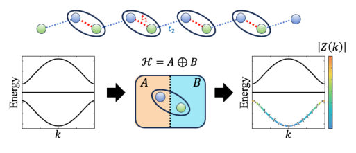
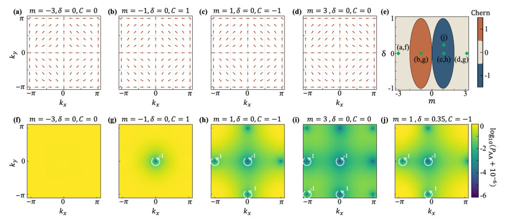
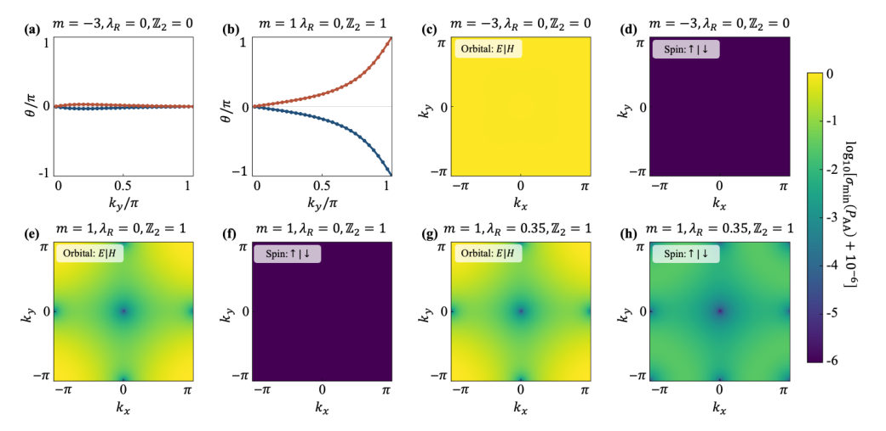
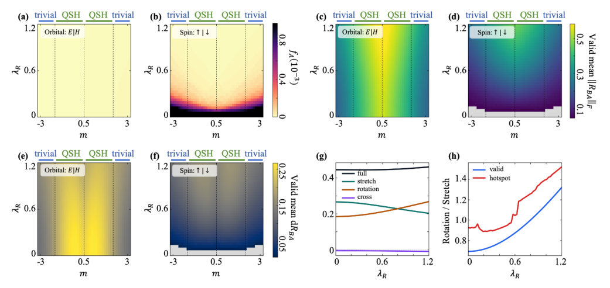
Summary. This work introduces the relative hybridization coordinate $Z$ as a powerful diagnostic tool to bridge the gap between abstract global topological invariants and concrete, sector-specific microscopic details of electronic bands. By analyzing the momentum-space texture of $Z$, researchers can robustly calculate quantities like the Chern number while explicitly tracking which physical components (e.g., orbital or spin sectors) contribute to the observed topology.
Why it may be interesting. While focused on solid-state topology, the concept of using a local coordinate system ($Z$) derived from projection operators to diagnose global properties is highly relevant for characterizing entanglement structures or effective Hamiltonians in open quantum systems.
Main problem. Global topological diagnostics (like Berry curvature) characterize band geometry but fail to specify the underlying microscopic sectors responsible for these invariants.
Main result. The relative hybridization coordinate $Z$ provides a sector-resolved framework that connects global topology and geometry directly to local, microscopic degrees of freedom within the occupied Bloch subspace.
Method. The authors introduce $Z$, defined as a projector-level diagnostic (Grassmann graph coordinate) relating the occupied subspace to chosen reference sectors ($A$ vs. $B$). Topological invariants are then read from defects in the momentum-space texture of $Z$.
Model / system. The framework is applied generally to Bloch subspaces in condensed matter systems, with specific tests on the Qi-Wu-Zhang (QWZ) Chern insulator and the lattice BHZ model.
Key observables. Relative hybridization coordinate $Z$, quantum geometric tensors ($T_{ij}$), chart viability field ($\sigma_{\min}(P_{AA})$), and topological invariants like the first Chern number derived from defect winding.
Important parameters / regimes. The dimension matching between sectors ($ ext{dim } A$ vs. $N_{ ext{occ}}$) is crucial for defining the coordinate $Z$.
Assumptions / limitations. The analysis relies on fixing a microscopic partition of the Hilbert space ($H = A \oplus B$) and assuming the existence of open patches where key projections are invertible.
Figures summary. Figure 1 illustrates that the magnitude of $Z$ measures local mixing strength, while its phase retains coherent information about sector-resolved hybridization.
Paper structure. The paper develops the mathematical formalism for $Z$, derives geometric tensors from it, and then applies this machinery to calculate known topological invariants (Chern number via defect counting) in benchmark models like QWZ and BHZ.
Global diagnostics such as Berry curvature and quantum metrics characterize the geometry and topology of an occupied Bloch subspace, leaving the microscopic sectors that carry this structure implicit. We introduce the relative hybridization coordinate $Z$ as a projector-level diagnostic connecting these global quantities to local degrees of freedom. As the Grassmann graph coordinate relative to a chosen sector, $Z$ reconstructs the local projector and retains the phase and matrix orientation absent from ordinary weight or fat-band descriptions. On valid chart patches, its momentum-space texture encodes Berry curvature, quantum metric, Berry phases, and Wilson loops, while chart obstructions appear as rank-drop defects whose balanced-chart winding of $\det Z$ gives the first Chern number. In the QWZ model this defect inventory reproduces the Chern phase diagram. In the lattice BHZ model, matrix $Z$ diagnoses the orbital $E|H$ partition as a robust matched chart for the QSH geometry, while the spin partition remains essential to the block and $\mathbb Z_2$ interpretation and shows rank deficiency as a matched chart in the spin-conserving limit. The relative hybridization coordinate thus provides a sector-resolved framework for relating band geometry and topology to microscopic structure.
Authors: Rhonald Burgos Atencia, Pavlo Makushko, Gabriele Naselli, Debottam Mandal, Paul Chekhonin, Sergey Kovalev, Steffen Kober, Zhe Wang, Igor Veremchuk, Oleksiy Pashkin, Fabian Ganss, Maria Teresa Mercaldo, Denys Makarov, Carmine Ortix
Type: both · Category: other · PDF: https://arxiv.org/pdf/2607.25725v1
Analysis basis: full PDF text, analyzed in chunks
Topic relevance: non-equilibrium dynamics 2/5 · Keldysh / 2PI / non-Gaussian methods 1/5 · driven-dissipative phase transition 1/5
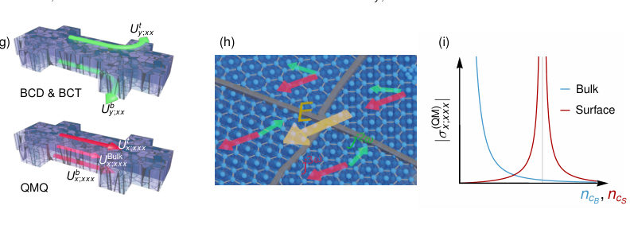
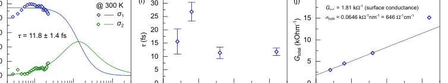
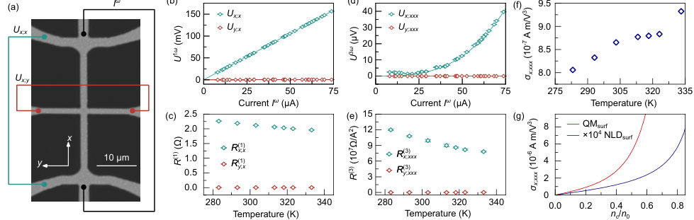
Summary. This paper establishes that nonlinear third-order electrical transport in centrosymmetric materials is dictated by Quantum Metric Quadrupoles derived from the quantum geometry of electron wavefunctions. The authors theoretically model this effect using Dirac fermions and experimentally validate it by measuring robust third-harmonic generation in elemental bismuth thin films at room temperature. This demonstrates that third-order nonlinearity serves as a high-precision diagnostic tool for probing wavefunction geometry under ambient conditions.
Why it may be interesting. While focused on condensed matter transport, the explicit link between macroscopic measurable quantities (third-harmonic current) and fundamental quantum geometric invariants (quantum metric quadrupoles) provides a powerful, non-perturbative probe of electronic structure geometry.
Main problem. The study investigates nonlinear transport properties in solids, linking them directly to the quantum geometry of electronic wavefunctions encoded in the quantum metric tensor.
Main result. Third-order nonlinear transport is governed by Quantum Metric Quadrupoles (QMQs), which were experimentally observed as robust third-harmonic generation in elemental bismuth thin films up to room temperature.
Method. The work combines theoretical derivation of third-order conductivity tensors with extensive experimental measurements using electrical harmonic detection and THz spectroscopy on patterned thin films.
Model / system. The focus is on non-magnetic, centrosymmetric materials hosting relativistic fermions, modeled by bulk Dirac fermions (non-Abelian) and surface states (Abelian). The experiment uses elemental bismuth thin films with polycrystalline structure.
Key observables. Third-order nonlinear conductivity tensor ($\sigma_{x;xxx}$), third-harmonic voltage ($U_{x;xxx}$), and the comparison between QMQ and Nonlinear Drude contributions.
Important parameters / regimes. Room temperature operation, polycrystallinity (allowing domain averaging survival), and carrier density dependence on $n$-type carriers.
Assumptions / limitations. The longitudinal third-order response survives domain averaging in polycrystalline films, unlike second-harmonic responses; the QMQ contribution dominates over other nonlinear terms.
Figures summary. Figures compare theoretical contributions (QMQ vs NLD), show BZ structures and surface splitting, and present experimental data on $\sigma_{x;xxx}$ dependence on current and temperature for bismuth thin films.
Paper structure. The paper progresses from establishing the quantum geometric origin of nonlinear transport to developing models for bulk/surface contributions, culminating in detailed electrical and THz measurements on elemental bismuth to validate the QMQ diagnostic tool.
The nonlinear transport properties of solids are deeply rooted in the quantum geometry of their electronic wavefunctions, which is encoded in the quantum geometric tensor. Its real part, known as the quantum metric, has been recently identified as a primary origin of nonlinear transport in quantum materials where time-reversal and inversion symmetries are not simultaneously present. Consequently, the influence of the quantum metric on the largest class of materials -- non-magnetic and centrosymmetric systems -- has remained entirely elusive. Here, we demonstrate that third-order transport in centrosymmetric materials hosting relativistic fermions is governed by quantum metric quadrupoles (QMQs). We show that these QMQs can originate from both the non-Abelian quantum geometry of bulk three-dimensional Dirac fermions and the Abelian quantum geometry of spin-orbit-coupled surface states. In stark contrast to all zero-field nonlinear transport signatures known to date, the current driven by these QMQs persists as a robust, non-vanishing observable even in highly scalable polycrystalline thin films. We experimentally validate this quantum metric footprint by measuring nonlinear transport in thin films of elemental bismuth, observing a robust, surface-dominated, and broadband third-harmonic generation that persists up to room temperature. Our findings uncover a hidden role of the quantum metric in polycrystalline systems, establishing third-order nonlinear transport as a high-precision diagnostic tool of wavefunction geometry under ambient conditions.
Authors: Ujjal Roy, Monosij Roy, Unmesh Ghorai, Arkaprava Mukherjee, Ravi Kumar, Kenji Watanabe, Takashi Taniguchi, Nandini Trivedi, Rajdeep Sensarma, Subroto Mukerjee, Anindya Das
Type: both · Category: other · PDF: https://arxiv.org/pdf/2607.25359v1
Analysis basis: full PDF text, analyzed in chunks
Topic relevance: Keldysh / 2PI / non-Gaussian methods 2/5 · methods for driven-dissipative 1/5 · non-equilibrium dynamics 1/5
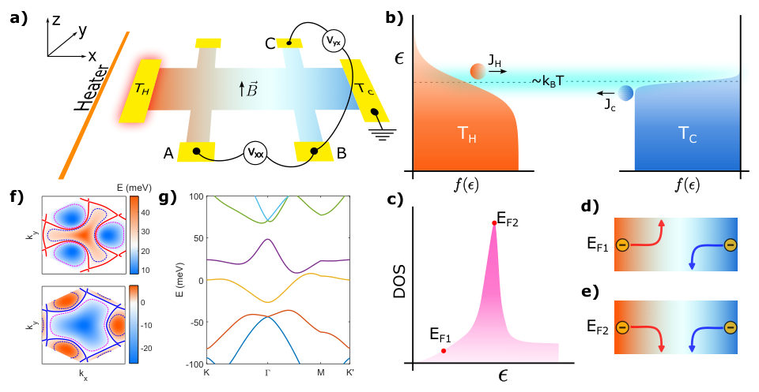
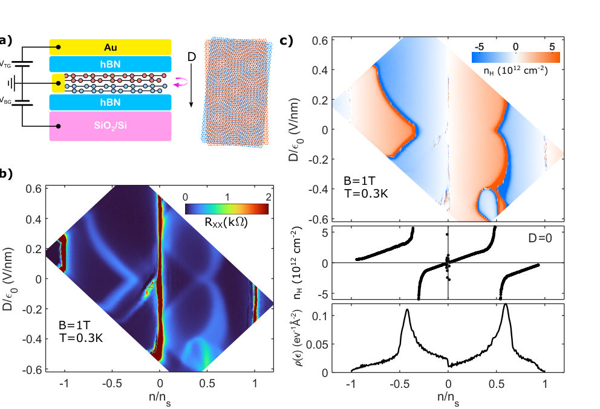
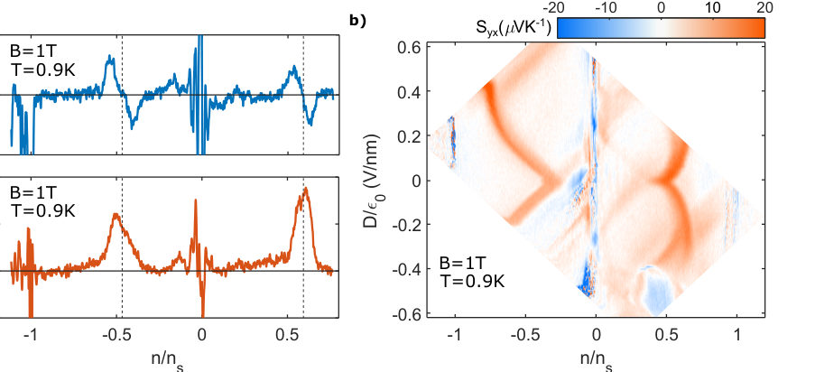
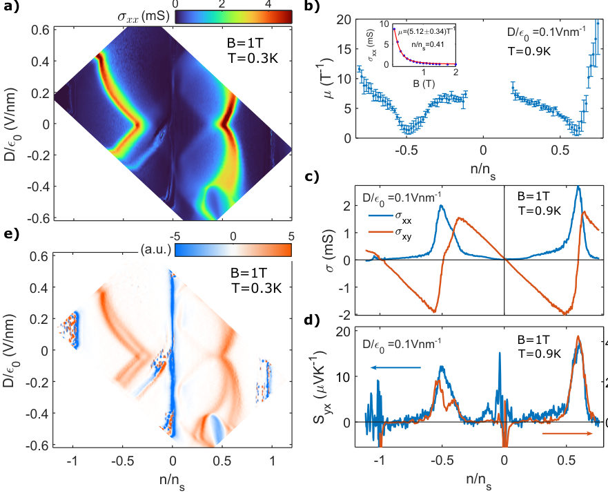
Summary. This work demonstrates that Van Hove singularities in twisted double bilayer graphene lead to a giant Nernst signal, which serves as a sensitive probe of the material's Fermi surface topology. The large enhancement is theoretically linked to Lifshitz transitions occurring near these density of states peaks. By combining theory and experiment, the authors establish a universal thermoelectric signature for vHSs in moiré systems.
Why it may be interesting. While focused on solid-state transport, the concept of using topological features (like vHSs) to engineer measurable quantum responses (Nernst effect) is relevant for understanding exotic electronic states in low-dimensional or engineered quantum systems.
Main problem. To investigate how Van Hove singularities (vHSs) influence thermal transport, specifically generating a large Nernst signal in moiré materials.
Main result. The authors show that vHSs in twisted double bilayer graphene generate an unusually large and tunable Nernst signal, which is attributed to Lifshitz transitions around these singularities.
Method. The study combines experimental measurements of thermopower and the Nernst effect with theoretical calculations based on semiclassical Boltzmann transport equations.
Model / system. The physical system is twisted double bilayer graphene (tDBLG), a moiré material whose electronic structure features vHSs. Theoretical analysis uses continuum theory and minimal tight-binding models to describe band dispersion and DOS.
Key observables. Nernst signal ($S_{yx}$), Seebeck coefficient ($S_{xx}$), Density of States (DOS) peaks, and the evolution of Hall density ($n_H$).
Important parameters / regimes. Twist angles ($ ext{D}1$, $ ext{D}2$), out-of-plane displacement field ($D$), magnetic field ($B$), and carrier filling fraction ($n_0$).
Assumptions / limitations. The theoretical calculations sometimes neglect DOS inhomogeneity due to angle variation in real devices, and some models use minimal band structures that may not capture the full complexity of tDBLG.
Figures summary. Figures illustrate measurement setups, show $R_{xx}$ and $R_{xy}$ mapping vHSs via density divergence, and compare calculated vs. measured Nernst signals ($S_{yx}$) peaking sharply at the vHS locations.
Paper structure. The paper progresses from identifying the physical problem (vHS effect on thermal transport) to presenting experimental evidence of large $S_{yx}$ peaks, followed by theoretical derivations linking this enhancement to Lifshitz transitions and Fermi surface topology changes.
Twisted graphene layers host van Hove singularities (vHSs), peaks in the electronic density of states, thought to drive exotic phases in moiré materials, but their effect on thermal transport has remained unclear. Here we show that vHSs in twisted double bilayer graphene (tDBLG) generate an unusually large Nernst signal-the transverse voltage produced by a longitudinal temperature gradient in a magnetic field. The pronounced Nernst peaks at the vHSs of the conduction and valence bands of tDBLG are tunable by an electric field with a maximum value of $\sim 40$ $μV K^{-1} T^{-1}$ at $\sim 1$ $K$, which is comparable to the best-known Nernst materials. Our theoretical calculations show that the large enhancement of the Nernst signal arises from the Lifshitz transitions around the vHSs. These findings establish the Nernst effect as a sensitive probe of Fermi-surface topology in moiré materials, and identify a universal thermoelectric signature of van Hove singularities.
Authors: Jiaheng Li, Yan Zhang, Jiaxuan Liu, Caiyuan Ye, Tiannian Zhu, Zhong Fang, Hongming Weng, Quansheng Wu
Type: theory · Category: other · PDF: https://arxiv.org/pdf/2607.25172v1
Analysis basis: full PDF text, analyzed in chunks
Topic relevance: analog quantum simulation 2/5
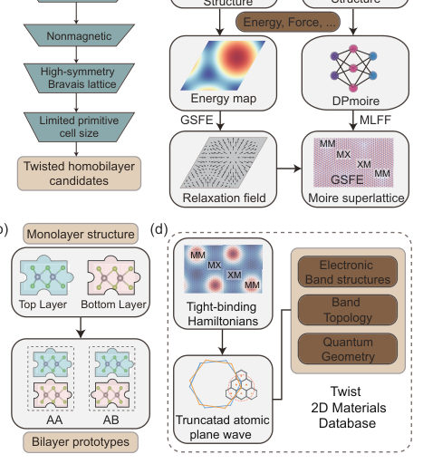
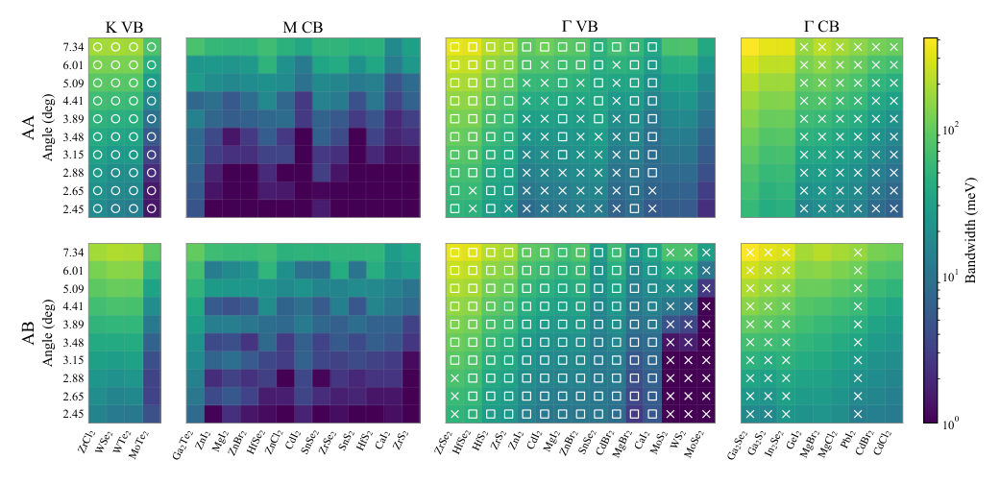
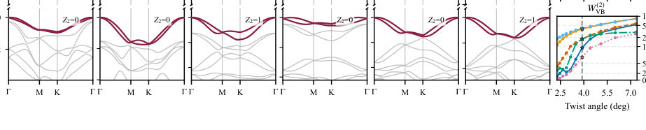
Summary. This work develops a comprehensive computational framework to map the complex moiré band topology in twisted 2D semiconductors. By analyzing thousands of structures, the authors reveal that the resulting electronic properties are systematically governed by the parent band's valley character and the interlayer stacking symmetry. This establishes a crucial materials-level design principle for engineering flat and topological quantum states.
Why it may be interesting. The systematic classification of topological phases based on crystal symmetry and electronic structure (valley/stacking) provides a powerful, generalizable framework for engineering quantum states in novel solid-state platforms.
Main problem. The primary goal is establishing systematic, predictive principles for organizing the material dependence of topological moiré bands in twisted semiconductors.
Main result. The low-energy electronic structure is organized primarily by the valley character ($\Gamma$, K, M) and stacking symmetry, providing a materials-level design principle for flat/topological moiré bands.
Method. A high-throughput computational framework integrating structural relaxation (MLFFs), first-principles DFT calculations, and topological analysis was developed and applied to numerous bilayer prototypes.
Model / system. The system studied is twisted two-dimensional (2D) semiconductors forming moiré superlattices. The analysis covers 43 monolayers and 91 symmetry-inequivalent bilayers.
Key observables. Moiré electronic band structures, miniband width scaling ($W( heta)$), topological invariants ($\mathbb{Z}_2$ indices, Chern numbers $|C_K|$), and valley character.
Important parameters / regimes. Twist angle ($ heta$), stacking symmetry (AA vs. AB), and the parent band edge's valley character ($\Gamma$, K, M).
Assumptions / limitations. The analysis relies on classifying behavior based on the inherent valley structure of the constituent monolayers; $M$-valley physics is noted as an exception to standard classification.
Figures summary. Figures illustrate the high-throughput workflow and show twist-angle dependence heatmaps for moiré bandwidths and topological characteristics, categorized by valley type ($\Gamma$, K, M) and stacking configuration.
Paper structure. The paper establishes a computational framework (workflow $ ightarrow$ relaxation $ ightarrow$ calculation). It then analyzes results based on the parent band's valley character ($\Gamma$-valley showing quadratic scaling; K-valley showing hybridization control; M-valley being material-specific) to derive universal design rules.
Twisted two-dimensional semiconductors provide a route to flat and topological moiré minibands, but systematic principles for organizing their material dependence have remained unclear. Here, we establish a high-throughput framework that integrates structural relaxation, first-principles electronic structure calculations, and moiré band topology. We apply this framework to 43 experimentally realized monolayers and 91 symmetry-inequivalent bilayer prototypes, yielding over 1,000 angle-resolved moiré electronic band structures. This database reveals that the low-energy moiré electronic structure is organized primarily by the valley character of the parent band edge together with stacking symmetry. In $Γ$-valley systems, the miniband width usually follows a nearly quadratic twist-angle scaling, consistent with a folding-dominated kinetic-energy scale. In $K$-valley systems, stacking-controlled interlayer hybridization governs whether parent Berry curvature is redistributed into isolated valley Chern minibands. By contrast, $M$-valley systems form a more material-specific class associated with anisotropic and symmetry-constrained band folding. The same valley-and-stacking hierarchy rationalizes the emergence or suppression of $\mathbb{Z}_2$ minibands, and surface termination in Janus bilayers provides a microscopic knob for changing the relevant valley character. These results establish a materials-level organizing principle for designing flat and topological moiré bands in twisted semiconductors.
Authors: Christos Mystilidis, Christos Tserkezis, George Fikioris
Type: theory · Category: other · PDF: https://arxiv.org/pdf/2607.25469v1
Analysis basis: full PDF text, analyzed in chunks
Topic relevance: Kondo & dissipative impurity 1/5 · analog quantum simulation 1/5 · non-equilibrium dynamics 1/5
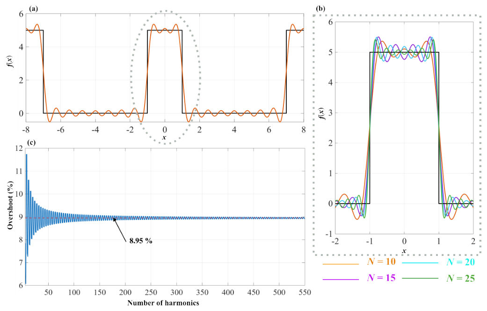
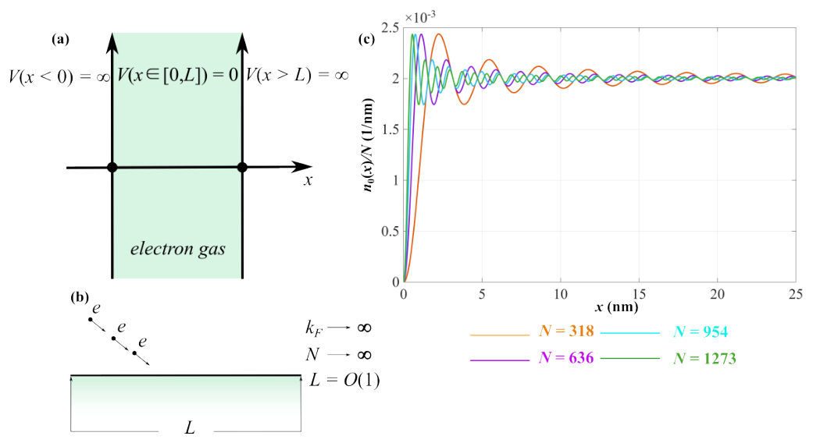
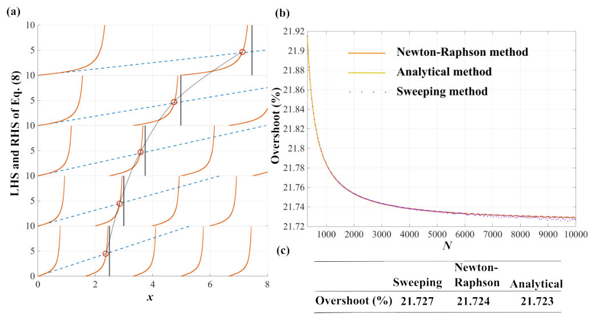
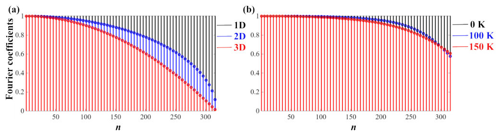
Summary. This paper explores the mathematical parallels between the Gibbs phenomenon in Fourier analysis and Friedel oscillations in electron density. Although they look similar due to sharp truncations, the authors rigorously argue that their physical origins are different. The work is valuable for creating a common conceptual language between electrical engineers and condensed-matter physicists.
Why it may be interesting. It provides a valuable educational bridge between electrical engineering concepts (Fourier series convergence) and condensed matter physics (electron screening), offering new ways to build intuition for complex many-body phenomena.
Main problem. The paper compares the Gibbs phenomenon, arising from partial Fourier series approximations of discontinuous signals, with Friedel oscillations observed in electron density near impurities.
Main result. While both phenomena exhibit striking mathematical similarities due to sharp truncations in Fourier space, they are fundamentally distinct; Friedel oscillations arise from electronic screening and Fermi surface geometry, not merely Fourier truncation artifacts.
Method. The authors use theoretical analysis involving partial sums of Fourier series (for Gibbs) and summation over discrete energy levels derived from the non-interacting electron gas model (for Friedel).
Model / system. The primary models are a 1D electronic gas confined by a square potential, analyzed using both partial Fourier representations and Fermi-Dirac statistics at zero temperature.
Key observables. Oscillatory overshoot/undershoot in local electron density ($ ho(x)$) near boundaries or impurities; the magnitude of this overshoot is compared to the universal 8.95% limit of the Gibbs phenomenon.
Important parameters / regimes. Fermi wavelength ($\lambda_F$), system length ($L$), temperature ($T$), and the number of retained Fourier/energy modes ($N$).
Assumptions / limitations. The analysis often relies on treating the system as semi-infinite or using approximations for large $N$ to compare the mathematical structures.
Figures summary. Figures illustrate the Gibbs overshoot using a square wave via partial Fourier series, and show standing-wave patterns characteristic of Friedel oscillations in a 1D electron gas near an impurity.
Paper structure. The paper proceeds by first defining the two phenomena separately (Gibbs vs. Friedel) and then performing a detailed comparative analysis, culminating in arguments that highlight their structural parallels while maintaining physical distinction based on underlying mechanisms.
We explore the similarities and differences between the Gibbs phenomenon in partial Fourier representations of discontinuous signals and Friedel oscillations in the electron density of a solid near an anomaly. Inspired by the apparent similarities of the two phenomena, we perform a detailed exploration of both from the viewpoint of an engineer being introduced to a concept from solid-state physics. Focusing on the density of an one-dimensional electronic gas confined by a square potential, we show that, despite the similarities, Friedel oscillations cannot be attributed to the inability of a partial Fourier series to describe a discontinuity. Nevertheless, the two phenomena do exhibit similarities, which can be exploited to develop intuition. By adopting an educational style, we hope to establish some common language between electrical engineers and condensed-matter physicists, hoping that this can further inspire the two communities to seek intuition and further comprehension within neighbouring but different disciplines.
Authors: Philipp Gessler, Alessandro Pignedoli, Alexander Neuhaus, Frank-J. Meyer zu Heringdorf, Maria Azhar, Karin Everschor-Sitte
Type: theory · Category: other · PDF: https://arxiv.org/pdf/2607.25848v1
Analysis basis: full PDF text, analyzed in chunks
Topic relevance: analog quantum simulation 1/5 · exotic spin models in light-matter 1/5 · spintronics-quantum-optics interface 1/5
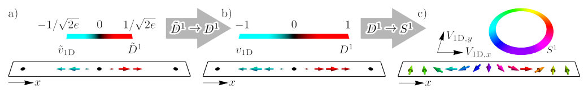
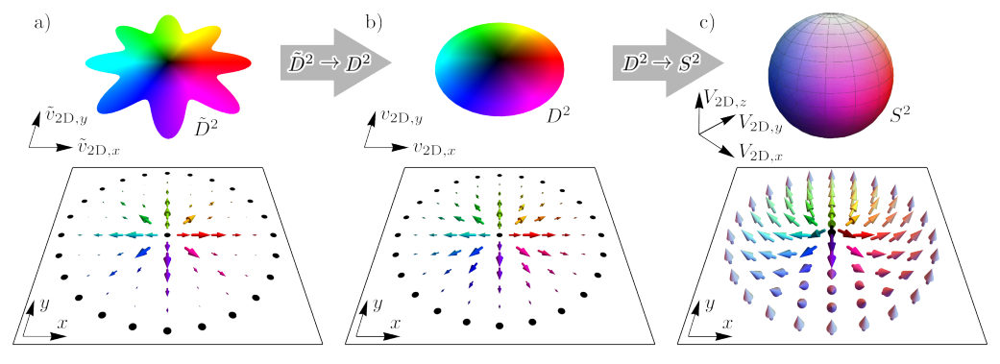
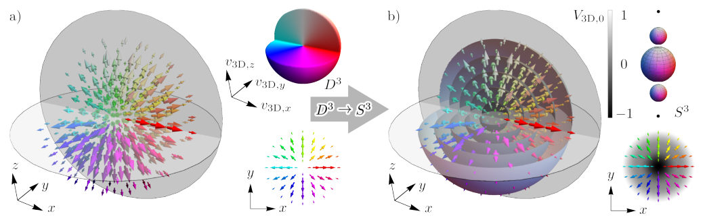
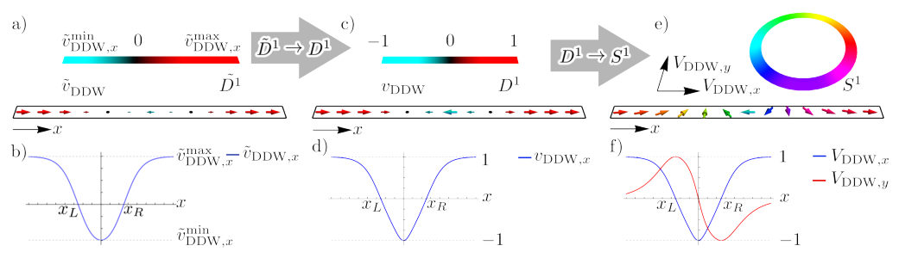
Summary. This paper presents a novel mathematical framework to topologically classify physical vector fields that suffer from amplitude zeros, which break standard normalization techniques. By embedding these $n$-dimensional fields into $(n+1)$-dimensional normalized spheres, the authors derive robust topological invariants applicable to diverse systems like magnetism and optics. This provides a unified tool for analyzing defects in complex physical media.
Why it may be interesting. While focused on classical field theory topology, the concept of robust topological invariants derived from singular or decaying fields is highly relevant for understanding defects in quantum materials (e.g., skyrmions) and phase transitions in condensed matter systems.
Main problem. The paper addresses the challenge of topologically classifying physical vector fields whose amplitudes vanish at certain points, rendering conventional normalization-based methods invalid.
Main result. A general framework is introduced by embedding non-normalizable $n$-dimensional vector fields into $(n+1)$-dimensional normalized vector fields, allowing for a robust topological characterization via homotopy groups.
Method. The core methodology involves rescaling the original field to lie within a unit disk ($D^n$) and then constructing an embedding into the next higher dimension ($S^n$) using a specific lifting function $\Gamma(v)$.
Model / system. The framework is applied to various physical systems, including magnetic textures, ferroelectrics, and electromagnetic fields, demonstrating its utility for analyzing 1D, 2D, and 3D vector field configurations.
Key observables. Topological charges ($Q_{1D}, Q_{2D}, Q_{3D}$), which are derived from the resulting map's classification by homotopy groups ($\pi_m(S^n)$).
Important parameters / regimes. The dimensionality of the field ($n$), the base space structure (compactifiable to $S^m$), and the choice of the lifting function $\Gamma(v)$.
Assumptions / limitations. It assumes the base space can be compactified to a sphere, and that the target space is a closed star-body with respect to the origin.
Figures summary. Figures illustrate the mapping process: showing the original field ($ ilde{v}$), its rescaled version ($v$) onto a disk, and finally the normalized embedding ($V$) onto a sphere for 1D, 2D, and 3D examples.
Paper structure. The paper develops the general mathematical framework first, then explicitly demonstrates its application to 1D, 2D, and 3D cases, emphasizing how the choice of the embedding function $\Gamma$ dictates the resulting topological invariant.
Topological classification of physical vector fields conventionally relies on field normalization and homotopy-based invariants. However, when field amplitudes vanish, normalization becomes ill-defined, preventing a direct topological characterization. Here, we introduce a general framework for the topological classification of non-normalizable $n$-dimensional vector fields with compactifiable base spaces by transforming them into $(n+1)$-dimensional normalized vector fields. This construction extends homotopy-based classification to fields containing amplitude zeros. We explicitly demonstrate the approach for one-, two-, and three-dimensional non-normalized vector fields and derive the corresponding topological invariants. The resulting topological charges are robust under continuous deformations and can change only when the embedding structure becomes singular. Our framework provides a unified route to the topological characterization of non-normalizable fields and opens the door to the study of topological phenomena in a broad range of systems, including magnetic textures, ferroelectrics, electromagnetic fields, and wave systems.
Authors: S. Jon Chapman, M. Kavousanakis, E. G. Charalampidis, I. G. Kevrekidis, P. G. Kevrekidis
Type: theory · Category: other · PDF: https://arxiv.org/pdf/2607.25898v1
Analysis basis: full PDF text, analyzed in chunks
Topic relevance: non-equilibrium dynamics 1/5
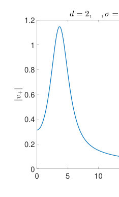
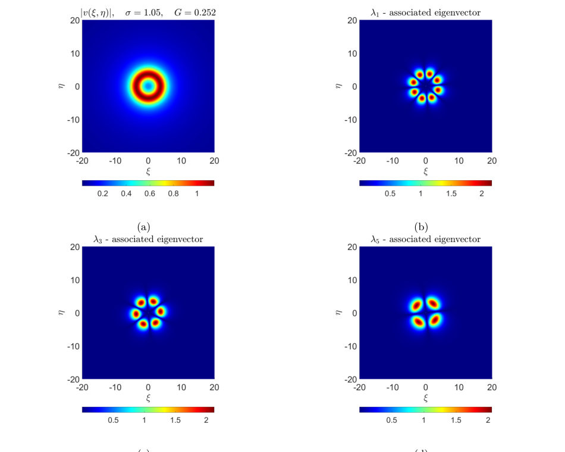
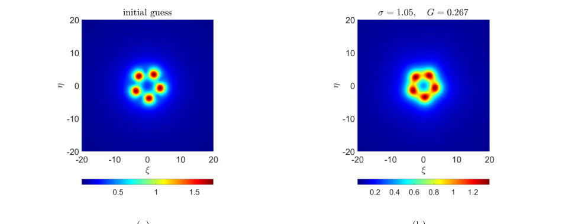
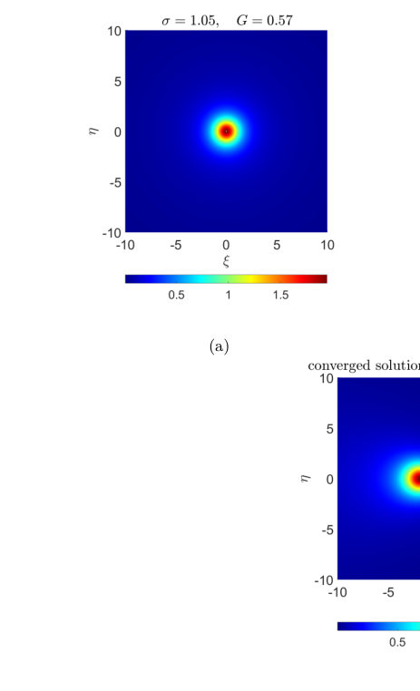
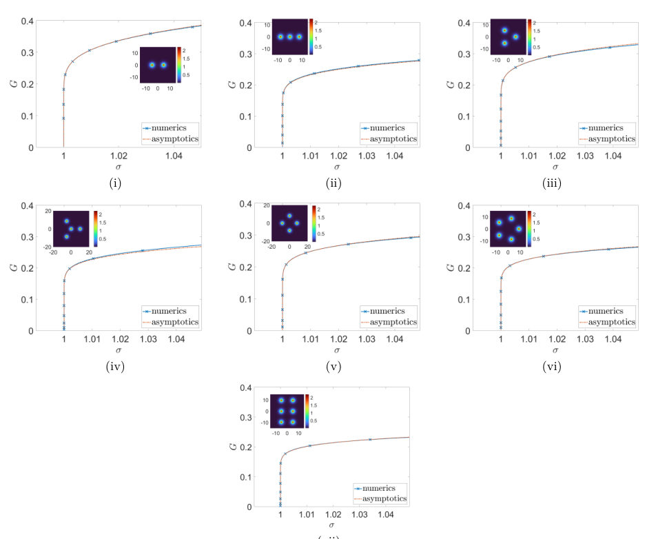
Summary. This work analyzes the complex behavior of multi-peaked waveforms undergoing self-focusing collapse in a 2D Nonlinear Schrödinger model. The authors demonstrate that while many stable-looking configurations exist near critical points, they are all dynamically unstable compared to the single-peak collapse. They employ advanced mathematical and computational techniques to map out this rich stability landscape.
Why it may be interesting. This paper provides deep insights into pattern formation and collapse dynamics in nonlinear wave equations, which are foundational to understanding energy localization and instability in quantum optics and BECs.
Main problem. The study investigates the self-focusing, collapse, and stability of multi-peaked waveforms governed by a nonlinear Schrödinger equation with general power-law nonlinearity in two dimensions.
Main result. A wide range of multi-peaked states bifurcate from the critical cubic nonlinearity threshold, but all such states are found to be less stable than the single-peak collapsing solution, which exhibits symmetry-breaking dynamics.
Method. The research combines analytical techniques (force balance modeling, bifurcation analysis) with advanced numerical methods (time integration, Newton's method, spectral stability analysis using high-performance computing libraries).
Model / system. The model is the two-dimensional Nonlinear Schrödinger (NLS) equation with a general power-law nonlinearity ($\sigma$), relevant to nonlinear optics and Bose-Einstein condensates.
Key observables. Blowup rate ($G$), eigenvalues (real and imaginary), peak positions ($X_i$), and the stability characteristics of multi-peaked vs. single-peak solutions.
Important parameters / regimes. Nonlinearity exponent ($\sigma$), spatial dimension ($d=2$), and the blowup rate $G$.
Assumptions / limitations. The analysis often treats the problem as a bifurcation from a critical threshold, and numerical stability relies on advanced continuation methods like pseudo-arclength tracking.
Figures summary. Figures summarize numerical results showing the evolution of wave intensity ($|v|$), peak distances ($\|X_i\|_{L^2}$) versus $G$, and theoretical vs. computed eigenvalue dependencies on $G$.
Paper structure. The work progresses by establishing the physical model, deriving an effective 'interacting particle system' force balance, analyzing the bifurcation structure of multi-peaked states, and concluding with a detailed spectral stability analysis.
In the present work, we explore the self-focusing and resulting collapse of two-dimensional waveforms involving multiple pulses in a nonlinear Schroedinger equation with a general power-law nonlinearity. We find that a wide range of multi-peaked states bifurcate from the critical threshold of the cubic nonlinearity, thus representing bifurcations from infinity'', i.e., the relevant pulses start at infinite distance in the critical limit and draw nearer, as the nonlinearity exponent increases past that threshold. We identify the resultinginteracting particle system'' as amounting to a force balance between the exponentially interacting tails (modulated by a suitable power law) and a linear phase-induced force. The equilibria emerging from this force balance are found to be in excellent agreement with the identified steady states of the partial differential equation. The spectral stability of multi-peaked configurations is analyzed, leading to the conclusion that all the relevant states are less stable than the single-peak collapsing solution whose stability was analyzed earlier. Indeed, we reveal both symmetry-breaking, as well as motion-inducing destabilizing dynamics, with the former ones among them being dominant and ultimately leading to a single dominant collapse spot. Moreover, we characterize systematically both the real and imaginary eigenvalues of multi-peaked configurations, partitioning them in groups of different sizes, described by powers of the solution's blowup rate G.
Authors: Abhijit Halder, Harsh Varshney, Snehamoyee Hazra, Santu Kumar Bera, Souvik Chakraborty, Ujjal Roy, Takashi Taniguchi, Kenji Watanabe, Amit Agarwal, Anindya Das
Type: both · Category: other · PDF: https://arxiv.org/pdf/2607.25757v1
Analysis basis: full PDF text, analyzed in chunks
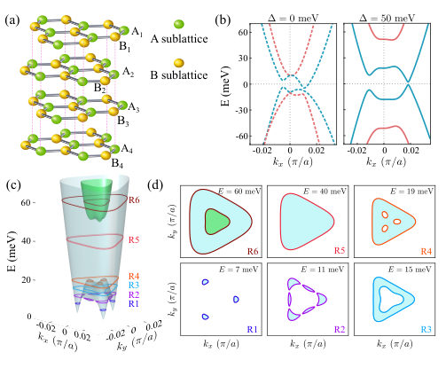
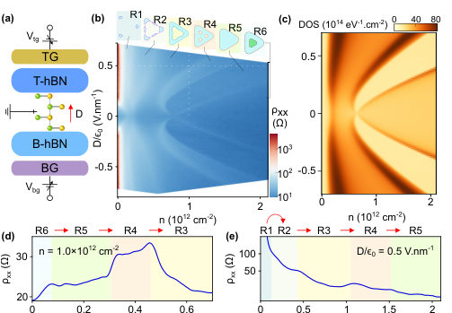
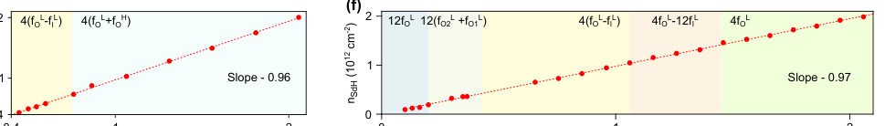
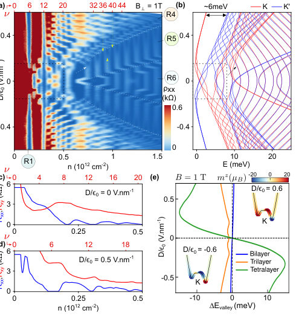
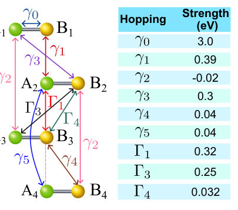
Summary. This research uses Shubnikov-de Haas spectroscopy on tetralayer graphene to quantitatively map out six distinct Fermi-surface topologies and their degeneracies. By combining magnetic and electric fields, the authors demonstrate a novel method to lift the valley degeneracy, providing a powerful tool for characterizing multiband quantum materials.
Why it may be interesting. The work provides a concrete experimental framework using quantum oscillations to map complex electronic band structures (topology) while simultaneously quantifying subtle symmetry breaking effects like valley splitting, which is crucial for understanding topological quantum materials.
Main problem. The primary challenge is quantitatively reconstructing both the topology of Fermi pockets and their associated flavor degeneracies across Lifshitz transitions in multiband quantum systems.
Main result. The study successfully mapped six distinct Fermi-surface topologies in tetralayer graphene and demonstrated that combining a perpendicular magnetic field with an electric displacement field can lift the valley degeneracy via orbital-Zeeman coupling.
Method. Shubnikov-de Haas (SdH) spectroscopy is used to probe extremal areas, while tight-binding models are employed for theoretical comparison of degeneracies and splitting mechanisms.
Model / system. The physical system is a high-mobility, dual-gated Bernal-stacked tetralayer graphene (B-4LG) device. The electronic structure is modeled using an extended tight-binding Hamiltonian incorporating interlayer hopping and external fields.
Key observables. Fermi-surface topologies (gully, annular, etc.), oscillation frequencies ($f_i$), spin/valley degeneracies ($g_i$), and the valley splitting energy ($\Delta E_{ ext{valley}}$).
Important parameters / regimes. Carrier density ($n$), perpendicular magnetic field ($B_\perp$), and displacement field ($D/\epsilon_0$). The splitting can reach several meV.
Assumptions / limitations. The analysis relies on the applicability of the Lifshitz–Kosevich formalism for SdH oscillations, and theoretical calculations use specific tight-binding approximations.
Figures summary. Figures show the evolution of six Fermi-surface topologies (Fig. 1), transport signatures confirming these regimes (Fig. 2), quantitative mapping of outer/inner contour frequencies vs. density (Fig. 3), and calculated single-particle Landau level spectra demonstrating valley splitting (Fig. 4, Fig. 6).
Paper structure. The paper first establishes the experimental challenge using SdH spectroscopy on B-4LG to map topological transitions across six regimes. It then details how tuning fields ($D$ and $B$) allows for quantitative reconstruction of degeneracies. Finally, it uses advanced tight-binding calculations to theoretically explain the large valley splitting observed.
Quantum oscillations offer a direct probe of Fermi-surface topology and electronic degeneracy, yet disentangling both simultaneously across the Lifshitz transitions of multiband systems has remained an open experimental challenge. Here, we use Shubnikov-de Haas spectroscopy on a high-mobility, dual-gated Bernal-stacked tetralayer graphene (B-4LG) device to quantitatively reconstruct the complete sequence of six distinct Fermi-surface topologies-gully, annular, singly connected, and multiband pockets. The extracted oscillation frequencies determine the extremal momentum-space areas and their spin, valley, and gully-resolved degeneracies, in quantitative agreement with our tight-binding calculations. We further show that a perpendicular magnetic-field, combined with displacement-field lifts the valley degeneracy through an orbital-Zeeman coupling, producing a single-particle valley splitting of several $meV$, far larger than in bilayer or trilayer graphene. Our work demonstrates a framework for tracking Fermi-surface topologies and their flavor degeneracies in multiband quantum materials.